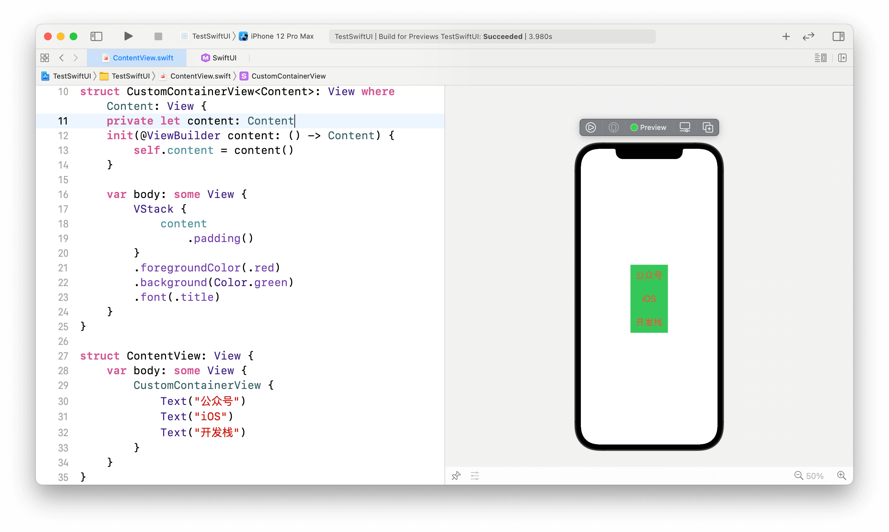

在SwiftUI框架中使用很多的注解，虽然使语法看上去非常简洁，但是增加了初学者的理解难度，这篇文章我们来看一下@ViewBuilder的相关知识。主要包括以下内容：
resultBuilder/functionBuilder是什么以及用法ViewBuilder结构体@ViewBuilder修饰符的用法-
使用
@ViewBuilder完成一个自定义视图 在SwiftUI框架中使用很多的注解，虽然使语法看上去非常简洁，但是增加了初学者的理解难度，这篇文章我们来看一下@ViewBuilder的相关知识。主要包括以下内容： resultBuilder/functionBuilder是什么以及用法ViewBuilder结构体@ViewBuilder修饰符的用法- 使用
@ViewBuilder完成一个自定义视图
到公众号【iOS开发栈】学习更多SwiftUI、iOS开发相关内容。
@resultBuilder注解
@resultBuilder是在Swift5.4添加的，之前是叫@_functionBuilder，在这里我们可以简单了解一下它的作用。
一个类、结构体添加@resultBuilder注解时必须包含至少一个buildBlock方法，并且这个方法是static静态的。这个方法可以接收0个或多个参数，在函数内部确定了参数的组成形式。
比如下面这个例子：
@resultBuilder struct StringBuilder {
static func buildBlock(_ string1: String, _ string2: String, _ string3: String) -> String {
string1 + " - " + string2 + " - " + string3
}
}
func test(@StringBuilder strings: () -> String) {
print(strings())
}
test {
"1"
"2"
"3"
}
StringBuilder是一个字符串构建者结构体，里面的buildBlock方法接收3个参数，并且在3个参数中间插入” - “作为函数的返回值。
test函数接收一个使用@StringBuilder修饰的名为strings的闭包作为参数，函数体是调用这个闭包并打印到控制台。
最后使用3个字符串作为参数调用test函数，执行这段代码后会得到”1 - 2 - 3”的输出结果
@ViewBuilder定义
先来看ViewBuilder的定义：
@resultBuilder struct ViewBuilder
ViewBuilder本质上是一个结构体，并且被@resultBuilder注解，也就是说ViewBuilder是一个reult builder（结果建造者）类型了。
ViewBuilder结构体有11个名为buildBlock的函数，分别接收从0到10个View类型的参数，因此在SwiftUI中一个接收@ViewBuilder类型参数的视图容器最多能接收10个子视图，如果不能满足需求可以通过拆分来增加子视图的个数。
@ViewBuilder的用法
使用@resultBuilder注解ViewBuilder结构体后，就可以用@ViewBuilder修饰闭包，这个闭包可以接收多个指定类型的对象，而这些对象会按照buildBlock函数的实现进行组织。
A custom parameter attribute that constructs views from closures.
这是Apple的官方文档对ViewBuilder的定义，简单来说ViewBuilder就是一个包含多个视图的闭包。
在SwiftUI框架中，所有的容器视图都是使用@ViewBuilder来修饰最后一个参数，因此这些容器视图可以接受多个子视图作为参数。比如HStack/VStack/ScrollView等。
// HStack
public struct HStack<Content> : View where Content : View {
...
@inlinable public init(alignment: VerticalAlignment = .center, spacing: CGFloat? = nil, @ViewBuilder content: () -> Content)
...
}
这是HStack的初始化方法，其中前面的几个参数都是可选项，它们不在本篇文章的讨论范围内。
它的最后一个参数content的类型是一个返回值为Content的闭包，单看()->Content是一个没有参数的闭包，但是前面使用了@ViewBuilder修饰，这就是一个可以接收多个视图的闭包了，最终看起来像是这样的：(view1: Content, view2: Content....) -> Content。
下面我们通过自定义一个视图来看@ViewBuilder的用法。
实践
下面通过实现一个自定义的容器视图来展示@ViewBuilder的用法：

自定义一个继承自View名为CustomContainerView的视图，它仅有一个接收@ViewBuilder类型参数的初始化方法，并使用常量content接收这个参数。
在body中构建当前视图：@ViewBuilder中可能包含多个子视图，因此使用VStack把这些子视图纵向排列，之后使用多个视图修改器自定义子视图的外观。
在源文件的第29行，ContentView中创建了CustomContainerView并给它传递了3个Text子视图。通过Xcode右侧的即时预览可以看到这三个子视图正是以我们在CustomContainerView中要求的方式展现出来——纵向排列、绿色的背景色、红色的文字颜色等。
到公众号【iOS开发栈】学习更多SwiftUI、iOS开发相关内容。
总结
至此，关于@ViewBuilder的相关知识基本都涉及到了，相信通过本篇文章的学习你一定也对它有了一个非常全面的掌握，那么赶快到实战项目中用起来吧👍。